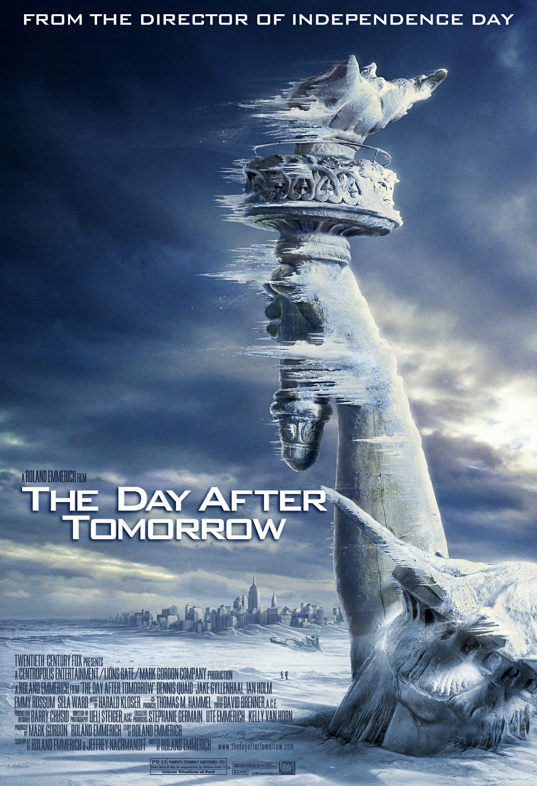

后天（The Day After Tomorrow，2004）
一句话短评：
内容简介：
- 美国气候学家杰克（丹尼斯•奎德 Dennis Quaid 饰）认为，温室效应正在引发地球的大灾难，北极冰川的融化，会让地球回到冰河世纪那样的劫难。他的提醒并没有引起美国当局的重视，一切都已经太晚：飓风、冰雹、洪水、冰山融化、极度严寒，一系列的地球巨变引发了一场不可挽救的灾难。美国政府组织北纬30度的民众转移到赤道周围，场面一片混乱。更糟糕的是，杰克的儿子，正困在曼哈顿的图书馆里，靠烧书生火来维持体温。大家怎样才能逃过这场灭顶的灾祸？冰天雪地的地球何时才能回暖？
短评：
- 灾难片的翘楚之作。最欣赏的一个细节是气温骤降被困在图书馆里的人靠烧书取暖时有意识的同一本书至少留一本。求生之际仍然能注意到文化传承，这很了不起。影片场景很宏大，雪灾的特效处理的很真实。 希望人类能好好呵护环境，不要让电影里的特效变成明天地球的真实场景。 ——amelin
可播放资源：
- 咪咕视频 VIP免费观看
- https://www.miguvideo.com/p/detail/621952320